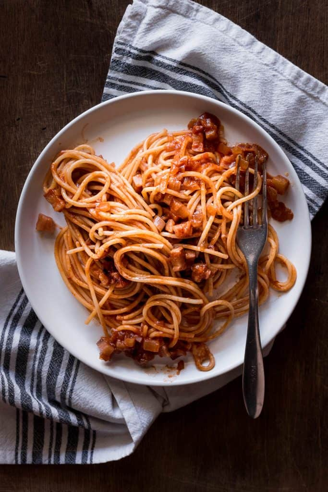

Easy Amatriciana Pasta Recipe

My easy and cosy Pasta
When I have a bad day i always make this pasta to make myself feel better inspired by Gordon Ramsay Quick pasta Video on Fuck That's delicious on Youtube.
ingredients:
- extra-virgin olive oil, to taste
- 5 ounces|140 grams guanciale, sliced into lardons
- 1 yellow onion, diced
- 8 ounces|225 grams whole peeled tomatoes, crushed by hand
- 8 ounces|225 grams rigatoni
- freshly grated Pecorino romano, to serve
- freshly ground black pepper, to taste
Follow along:
- Heat the oil in a large skillet over medium. Add the guanciale and cook, stirring occasionally, until crisp, about 6 minutes. Using a slotted spoon, transfer to a paper towel-lined plate. Reduce the heat to low, add the onion, and cook until slightly caramelized, about 10 minutes. (If the onions start to stick, add a tablespoon or 2 of water to prevent burning.) Add the tomatoes and cook until thick, 5 minutes more.
- In the meantime, bring a large pot of generously salted water to a boil. Add the rigatoni and cook until al dente, about 11 minutes. Drain, then immediately add to the skillet along with half of the guanciale. Toss to combine, then divide among plates and top with the reserved guanciale. Grate on Pecorino to your heart's content, then grind on some black pepper and drizzle with olive oil.